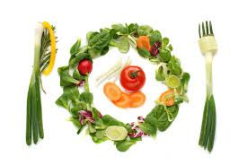
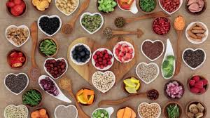

¿Que es ser vegano?
Una de las definiciones del veganismo,Veganismo doctrina de que los humanos deben vivir sin explotar a los animales.
¿Que es ser veganos?
Practicante del veganismo, el veganismo de acuerdo a la Real Academia es: Actitud consistente en rechazar alimentos o artículos de consumo de origen animal.
ABOUTESPAÑOL define que ser vegano es aquella persona que no consume ningun producto natural, evitando carnes (incluyendo el pollo y el pescado), huevo, leche y productos lácteos, la manteca, la gelatina e inclusive la miel de abeja.
Igual que en el caso del vegetarianismo, la opción de ser vegano no es solo un cambio en la dieta sino que es afiliarse a una filosofía de vida en la que se prioriza el respeto por los animales y se opta por una alimentación saludable y repleta de los nutrientes que nos aportan los productos de la tierra (granos, vegetales, fruta, etcétera).
|  |  | |
Las personas que son vegetarianas son aquellas que han decidido dejar de incluir carne y pescado en su alimentación.
Los veganos son personas que no comen ningún tipo de alimento de origen animal, de forma que además de no comer carne ni pescado, también rechazan productos como la leche, los huevos, la mantequilla, la miel, etcétera. Por tanto, la diferencia entre vegano y vegetariano radica en que estos evitan no solo comer animales de forma directa (carne o pescado) sino que cualquier alimentos que proceda de los animales es totalmente rechazado en su dieta.
Diferencia esencial es que dentro de los vegetarianos hay diferentes modos de comer y concebir la alimentación pero, en el caso de los veganos: no se come ni carne ni pescado pero tampoco se consume nada que proceda de los animales pues, así, se evita intervenir en su naturaleza y privarles de la libertad.
El vegetarianismo en Chile y el mundo es una tendencia alimentaría que excluye los alimentos de origen animal o parte de ellos, los veganos en cambio no consumen productos de origen animal y sus derivados.